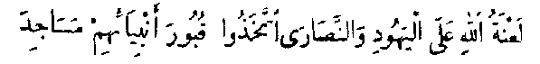

(from: Quran The Final Testament, by Rashad Khalifa, PhD.)
When Abraham implored God in 14:40, he did not ask for wealth or health; the gift he implored for was: "Please God, make me one who observes the contact prayers (Salat)." The religious duties instituted by God are in fact a great gift from Him. They constitute the nourishment required for the growth and development of our souls. Without such nourishment, we cannot survive the immense energy associated with God's physical presence on the Day of Judgment. Belief in God does not by itself guarantee our redemption; we must also nourish our souls (6:158, 10:90-92). Additionally, 15:99 states that observing the religious duties instituted by God is our means of attaining certainty: "Worship your Lord in order to attain certainty."
The five daily contact prayers are the main meals for the soul. While a soul may attain some growth and development by leading a righteous life, and without observing the contact prayers, this would be like surviving on snacks without regular meals.
We learn from 2:37 that we can establish contact with God by uttering the specific Arabic words given to us by God. Sura 1, The Key, is a mathematically composed combination of sounds that unlocks the door between us and God:
Each contact prayer is valid if observed anytime during the period it becomes due until the next prayer becomes due. Once missed, a given contact prayer is a missed opportunity that cannot be made up; one can only repent and ask forgiveness. The five prayers consist of 2, 4, 4, 3, and 4 units (Rak'ahs), respectively.
The proof that Salat was already established through Abraham is found in 8:35, 9:54, 16:123, & 21:73. This most important duty in Islam (Submission) has been so severely distorted that the contact prayers (Salat) have become a practice in idolatry for the vast majority of Muslims. Although the Quran commands that our contact prayers must be devoted to God alone (20:14; 39:3, 45), today's Muslims insist on commemorating "Muhammad and his family" and "Abraham and his family" during their prayers. This renders the prayers null and void (39:65).
The following text, pertaining to the miracles confirming the contact prayers, is excerpted (with minor editing), from the January 1990 issues of the Submitter's Perspective (the regular and special bonus issues), as written by Dr. Rashad Khalifa:
[1] Sura 1 is God's gift to us, to establish contact with Him (Salat). Write the sura number and the number of verses next to each other and you get 17, the total number of units in the 5 daily prayers.
[2] Let us write down the sura number, followed by the number of every verse in the sura. This is what we get:
This number is a multiple of 19.| Properties of Sura 1, The Key | ||
| Verse No | No of Letters | Gematrical Value |
| 1 | 19 | 786 |
| 2 | 17 | 581 |
| 3 | 12 | 618 |
| 4 | 11 | 241 |
| 5 | 19 | 836 |
| 6 | 18 | 1072 |
| 7 | 43 | 6009 |
[3] Now, let us replace each verse number by the number of letters in that verse. This is what we get:
also a multiple of 19. Theoretically, one can alter the letters of Sura 1, and still keep the same number of letters, however, the following mathematical phenomena rule out that possibility. For the gematrical value of every single letter is taken into consideration. Here it is:[4] Let us include the gematrical value of every verse, and write it down following the number of letters in each verse:
also a multiple of 19.[5] Now, let us add the number of each verse, to be followed by the number of letters in that verse, then the gematrical value of that verse. This is what we get:
a multiple of 19.[6] Instead of the gematrical values of every verse, let us write down the gematrical values of every individual letter in Sura 1. This truly awesome miracle, shows that the resulting long number, consisting of 274 digits, is also a multiple of 19. ALLAHU AKBAR.
This number starts with the sura number, followed by the number of verses in the sura, followed by the verse number, followed by the number of letters in this verse, followed by the gematrical values of every letter in this verse, followed by the number of the next verse, followed by the number of letters in this verse, followed by the gematrical values of every letter in this verse, and so on to the end of the sura. Thus, the last component is 50, the value of "N" (last letter).
[7] Since I cannot write very long numbers here, let us substitute [*] for the long number consisting of the number of every verse, followed by the number of letters in the verse, followed by the gematrical value of every individual letter in the verse. If we write down the number of the sura, followed by its number of verses, we get 17, the number of units (Rak'aas) in the 5 daily prayers. Next to the 17, write down the number of the first prayer (1), followed by its number of Rak'aas, which is 2, then two [*]'s, followed by the number of the second prayer (2), followed by the number of Rak'aas in the second prayer (4), followed by four [*]'s, and so on. Not only is the resulting long number a multiple of 19, but also the number of its component digits is 4636 (19x244) ....
[8] Since the Friday prayer consists of two sermons and two Rak'aas (total is still 4 units), we read only 15 "Keys" on Friday, compared with 17 on the other days. Abdullah Arik discovered that if we replace the 17 by 15 in the long number in [7], we must remove two "Keys" from the noon prayer to get a multiple of 19. This confirms the Friday Prayer, at noon, with 2 "Keys." The long number shown below represents Friday's five prayers; it is a multiple of 19.
Please note that, Dr. Khalifa indicated, there are other similar patterns that result in multiples of 19. For example, a short representation of “The Key” consists of the Sura number (1), followed by the number of verses (7), followed by the total number of letters in Sura 1 (139), followed by the total gematrical value of the whole sura (10143). The resulting number (1713910143) representing [*] can be used in the above patterns, without including the sequence number of the prayers. The resultant numbers for both regular and Friday prayer representations are multiples of 19. For example, here is the pattern for the regular prayers:
17 2[*][*] 4[*][*][*][*] 4[*][*][*][*] 3[*][*][*] 4[*][*][*][*]
[9] The first sura in the Quran is mathematically composed in a manner that challenges and stumps the greatest mathematicians on earth. Now we appreciate the fact that when we recite Sura 1, "The Key," during our Contact Prayers, something happens in the universe, and we establish contact with our Creator. The result is perfect happiness, now and forever. By contacting our Almighty Creator 5 times a day, we nourish and develop our souls in preparation for the Big Day when we meet God. Only those who nourish their soul will be able to withstand and enjoy the physical presence of Almighty God.
All submitters, of all nationalities, recite the words of "The Key" which were written by God Himself, and given to us to establish contact with Him (2:37).
Edip Yuksel's discovery adds to the awesomeness of "The Key" and proclaims clearly that it must be recited in Arabic.
When you recite "The Key" in Arabic, your lips touch each other precisely 19 times.
Furthermore, Your lips touch each other where the letters "B" and "M" occur. There are 4 "B's" and 15 "M's" and this adds up to 19. The gematrical value of the 4 "B's" is 4x2=8, and the gematrical value of the 15 "M's" is 15x40=600. The total gematrical value of the 4 "B's" and 15 "M's" is 608, that is 19x32.
| Word | Letter | Value | |
|---|---|---|---|
| 1. | Bism | B | 2 |
| 2. | Bism | M | 40 |
| 3. | Rahman | M | 40 |
| 4. | Rahim | M | 40 |
| 5. | Al-Hamdu | M | 40 |
| 6. | Rub | B | 2 |
| 7. | `Alamin | M | 40 |
| 8. | Rahman | M | 40 |
| 9. | Rahim | M | 40 |
| 10. | Malik | M | 40 |
| 11. | Yawm | M | 40 |
| 12. | Na'budu | B | 2 |
| 13. | Mustaqim | M | 40 |
| 14. | Mustaqim | M | 40 |
| 15. | An`amta | M | 40 |
| 16. | `Alayhim | M | 40 |
| 17. | Maghdub | M | 40 |
| 18. | Maghdub | B | 2 |
| 19. | `Alayhim | M | 40 |
| 608 (19x32) |
[10] One of the common challenges... is: "If the Quran is complete and detailed (as claimed in 6:19, 38, & 114), where are the details of the Contact Prayers (Salat)?" These people ask this question because they are not aware that the Quran informs us that the Contact Prayers came from Abraham (21:73 & 22:78).... Saeed Talari... wrote down the numbers of the prayers with their bowings, prostrations and Tashahhuds...:
This long number consists of the sura that we recite in the 5 prayers (1) followed by the number of the first prayer (1), then the number of "Keys" that we recite in this prayer (2), then the number of bowings (Ruku`) (2), then the number of prostrations (4), then the number of Tashahhuds (in the sitting position) (1), then the number of the second prayer (2), then the number of "Keys" that we recite in the second prayer (4), then the number of bowings (Ruku`) in this prayer (4), then the number of prostrations (8), then the number of Tashahhuds (2), then the number of the third prayer (3), and so on to the last prayer. This long number is a multiple of 19, and this confirms the minutest details of the prayers, even in the numbers of Ruku`, Sujud, and Tashahhud.
Zakat must be given away "on the day of harvest" (6:141). Whenever we receive "net income," we must set aside 2.5% and give it to the specified recipients - the parents, relatives, orphans, the poor, and the traveling alien, in this order (2:215). The vital importance of Zakat is reflected in God's law: "My mercy encompasses all things, but I will specify it for the righteous who give Zakat" (7:156).
Zakat must be carefully calculated and given away on a regular basis whenever we receive any income. Government taxes should be deducted, but not other expenses such as debts, mortgages, and living expenses. If one does not know needy persons, he or she may give the Zakat to a mosque or charitable organization with the distinct purpose of helping poor people. Charities given to mosques or hospitals or organizations cannot be considered Zakat.
The full details of fasting are given in 2:183-187.
Once in a lifetime, Hajj and `Umrah are decreed for those who can afford it. Pilgrimage commemorates Abraham's exemplary submission to God (Appendix 9), and must be observed during the four Sacred Months - Zul-Hijjah, Muharram, Safar, & Rabi` I (12th, 1st, 2nd, 3rd months) (2:197; 9:2, 36). `Umrah can be observed any time. Like all other duties in Islam, Hajj has been distorted. Most Muslims observe Hajj only during a few days in Zul-Hijjah, and they consider Rajab, Zul-Qi'dah, Zul-Hijjah, and Muharram (7th, 11th, 12th, 1st months) to be the Sacred Months. This is a distortion that is strongly condemned (9:37).
The pilgrimage begins with a bath or shower, followed by a state of sanctity called "Ihraam," where the male pilgrim wears seamless sheets of material, and the woman wears a modest dress (2:196). Throughout Hajj, the pilgrim abstains from sexual intercourse, vanities such as shaving and cutting the hair, arguments, misconduct, and bad language (2:197). Cleanliness, bathing, and regular hygiene practices are encouraged. Upon arrival at the Sacred Mosque in Mecca, the pilgrim walks around the Ka`bah seven times, while glorifying and praising God (2:125, 22:26-29). The common formula is: "Labbayka Allaahumma Labbayk" (My God, I have responded to You). "Labbayka Laa Shareeka Laka Labbayk" (I have responded to You, and I proclaim that there is no other god besides You; I have responded to You). The next step is to walk the half-mile distance between the knolls of Safa and Marwah seven times, with occasional trotting (2:158). This completes the `Umrah portion of the pilgrimage.
The pilgrim then goes to `Arafat to spend a day of worship, meditation, and glorification of God, from dawn to sunset (2:198). After sunset, the pilgrim goes to Muzdalifah where the Night Prayer is observed, and 21 pebbles are picked up for the symbolic stoning of Satan at Mina. From Muzdalifah, the pilgrim goes to Mina to spend two or three days (2:203). On the first morning at Mina, the pilgrim offers an animal sacrifice to feed the poor and to commemorate God's intervention to save Ismail and Abraham from Satan's trick (37:107, Appendix 9). The stoning ceremonies symbolize rejection of Satan's polytheism and are done by throwing seven pebbles at each of three stations, while glorifying God (15:34). The pilgrim then returns to Mecca and observes a farewell circumvolution of the Ka`bah seven times.
Unfortunately, most of today's Muslim pilgrims make it a custom to visit the prophet Muhammad's tomb where they commit the most flagrant acts of idolatry and thus nullify their Hajj. The Quran consistently talks about "The Sacred Mosque," while today's Muslims talk about "The Two Sacred Mosques!" In a glaring act of idolatry, the Muslims have set up Muhammad's tomb as another "Sacred Mosque!" This is a blasphemous violation of the Quran, and, ironically, even violates Hadith. The Hadith shown below illustrates this strange irony:
|

Translation of this false statement: "God has cursed the Jews and Christians for turning the tombs of their prophets into mosques." [Bukhari, Nawawi Edition, Vol. 6, Page 14] |
In addition to their invaluable spiritual benefits, there is a plethora of physical, economic, and health benefits from observing the contact prayers (Salat), obligatory charity (Zakat), fasting during the month of Ramadan, and Hajj.
Observing the Dawn prayer interrupts long periods of stillness during sleep; this is now proven to help prevent arthritis. Also, getting up early in the morning helps combat depression and other psychological problems. The prostration position which is repeated during the contact prayers expands the blood vessels in our brains to accommodate more blood, and this prevents headaches. The repeated bending of the back and the joints is a healthful exercise. All these are scientifically established facts.
The ablutions required prior to the contact prayers encourage us to use the toilet more frequently. This habit protects us from a common and devastating cancer, colon cancer. Harmful chemicals are excreted in the urine and fecal matter. If these excretions are kept in the colon for prolonged periods of time, the harmful materials are re-absorbed into the body, and cause cancer.
Fasting during the month of Ramadan restores our expanded stomachs to their normal sizes, lowers our blood pressure through temporary dehydration, rids the body of harmful toxins, gives our kidneys a much needed rest, and reduces our weight by removing excessive and harmful fat.
Zakat charity and Hajj pilgrimage have far reaching economic and social benefits.